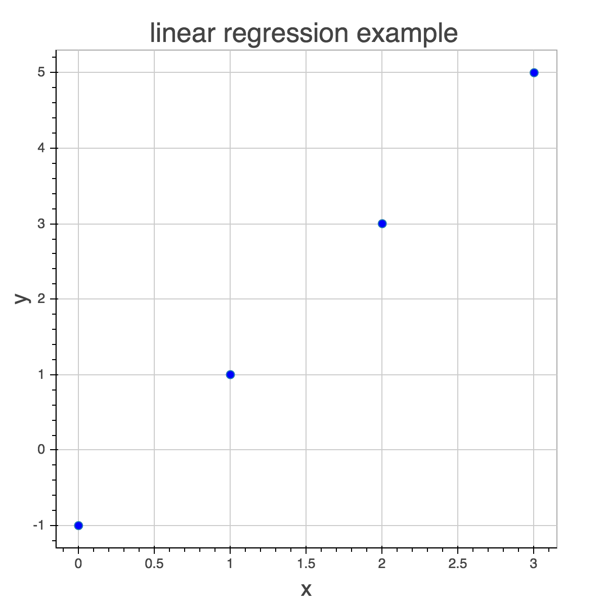
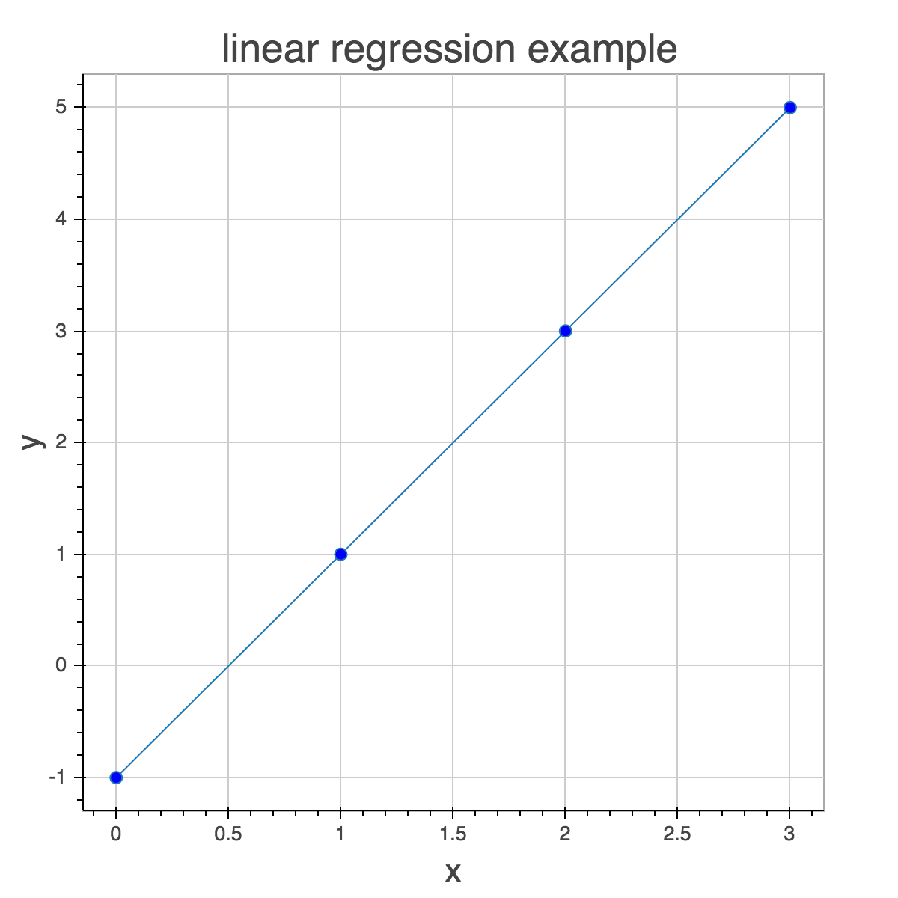
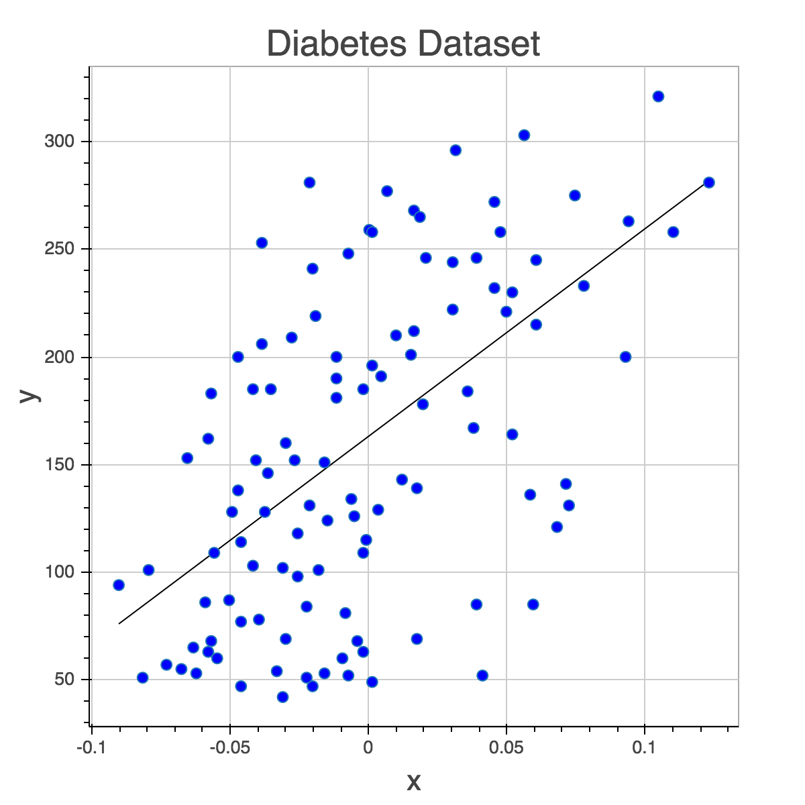

Linear RegressionはSupervised Learningですが、k-NNやNaive Bayesがクラスを予測するClassificationなのに対し、Linear Regressionは数値を予測するRegressionになります。不動産の価格予測や株式市場の予測がRegressionに当たります。
Linear RegressionではOptimization(最適化)を使うので、アルゴリズムの種類としてはLogistic RegressionやNeural Networkと同じです。Deep Learningを学ぶ上での土台となる理論が詰まっています。
Optimizationには微分積分を使うので今までより急激に難しくなります。
Linear Regressionの説明
Andrew NgのLecture notes1が非常に分かり易いので、それを元に説明します。
Linear Regressionは線形関数を使ってインプット(x)からアウトプット(y)を概算します。例えば不動産の価格予測であればインプットが専有面積や間取り、アウトプットが価格となります。
以下の簡単なデータを使って説明していきます。xの特徴は幾つあっても良いのですが、グラフで説明するためこのデータのxの特徴は一つだけです。
| x | y |
|---|---|
| 0 | -1 |
| 1 | 1 |
| 2 | 3 |
| 3 | 5 |

yを概算する線形関数を求めろと人間が言われたら直感的に分かると思います。

このようにグラフにすると全てのデータが直線状に並んでいます。普通のデータこんなにクリーンではないですが、説明し易いので簡単なデータを選びました。
計算すると分かる通り、この線形関数は
です。
これを数式にすると以下のようになります。とは同じ意味です。は特徴の数です。
今回の例ではxの特徴が一つしかないので以下のようになります。
, です。
この数式はdot productで表せるのですが、その為にはとを同じ長さにする必要があります。はインターセプトなので、にします。
を計算してみましょう。
xは１サンプルですが、全サンプル(X)を一度に計算した方が楽なので、以下の数式を使います。mをサンプル数とするとXが, がなのでがとなります。
例のデータを一度に計算してみましょう。
上記は最適なを使って計算したものですが、目的はこのを見つけることです。その為にはまずを適当に選び、がとどれだけ違うかに応じてを修正していきます。
Andrew NgのLecture notes1の4ページに最適化の説明が書かれています。微分積分が関わる部分なのでここでの説明は割愛します。をアップデートする数式は以下の通りです。
はlearning rateと呼ばれるもので、どれだけ早く最適化するかを設定します。これが小さすぎると学習が遅く、大きすぎるとconverge(収束)しなくなります。コードを書いて実際にアルゴリズムを実行すると理解出来ると思います。
mで割る理由は、サンプル数によるエラー値の違いを無くすためです。mがないとサンプル数に応じてを微調整することになり大変です。
Exercises
ではコードを書いていきましょう。
etaはlearning rateのことです。fitではまずを足します。
class MyLinearRegression(object):
def __init__(self, eta=0.1, n_iter=50):
self.eta = eta
self.n_iter = n_iter
def fit(self, X, y):
X = np.insert(X, 0, 1, axis=1)
return X
X = np.array([[0], [1], [2], [3]])
y = np.array([-1, 1, 3, 5])
regr = MyLinearRegression()
print(regr.fit(X, y))
[[1 0]
[1 1]
[1 2]
[1 3]]
Exercise 1
を計算しましょう。
Exercise 2
を計算しましょう。mとself.etaを使って下さい。
Exercise 3
predictを書きましょう。Exercise1とほとんど同じです。
Exercise 4
Linear Regressionは完成したんですが、一つ問題があります。サンプル数が多いと計算するのに時間がかかり学習が遅いです。Stochastic Gradient Descent(SGD)はこれを解決する為に１サンプルづつ計算しその都度weightをアップデートします。SGDの欠点はエラーの最小値にconvergeにしないことですが、実際はそこまで大きな問題ではありません。
weightをアップデートするコードを書きましょう。１サンプルづつなのでmはもう必要ありません。
Diabetes Dataset
Diabetes Datasetを使ってみました。特徴が１０個ありますが、視覚化したいので１つだけ使うことにしました。是非色んな特徴で試してみて下さい。
